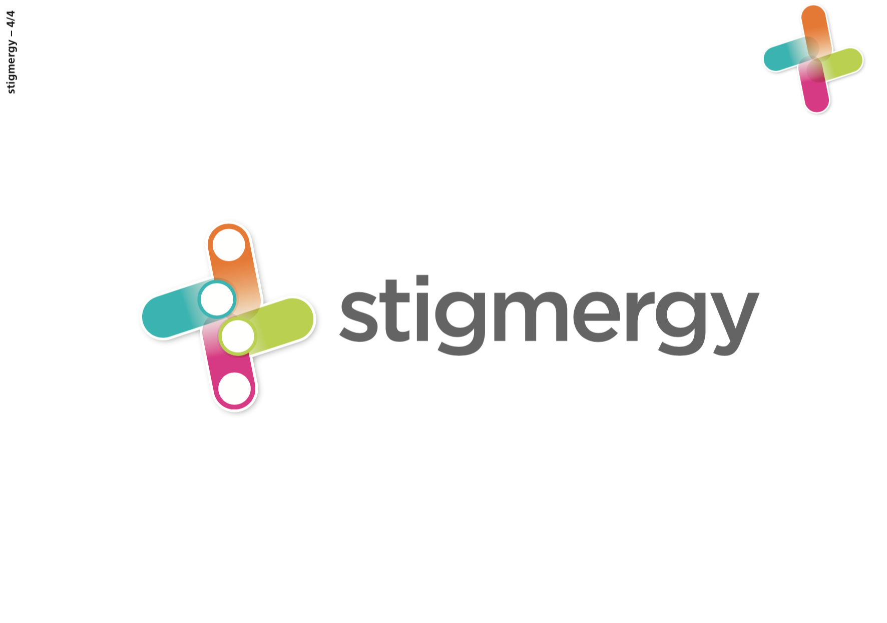
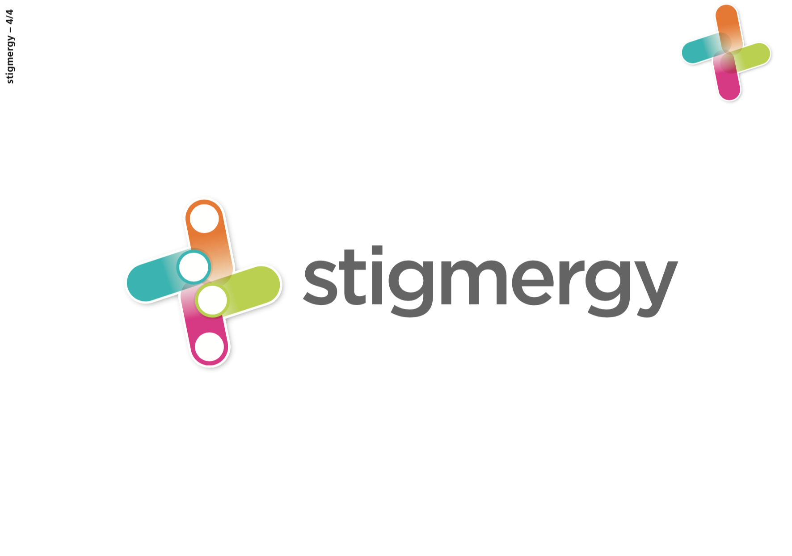

Juin 2017
Aurélie G. fondatrice d'Aspark cabinet de conseil en Stratégie a souhaité disposer d'un logotype pour sa société nouvellement créée : Stigmergy. Les collaborateurs de Stigmergy sont spécialisés dans l'accompagnement des entreprises vers l'innovation. Le logotype de la société devait ainsi refléter le changement et traduire les états mouvants d'éléments appartenant un réseau.

En biologie, la stigmergie est un mécanisme de coordination indirecte entre les agents. Le principe est que la trace laissée dans l'environnement par l'action initiale stimule une action suivante, par le même agent ou un agent différent. De cette façon, les actions successives ont tendance à se renforcer et a conduire à l'émergence spontanée d'activité cohérente, apparemment systématique.
Après des premières recherches autour de la typographie animées, il m'a semblé plus pertinent de chercher un sigle pour ce logo. Mes expérimentations se sont alors dirigées vers des associations formelles et typographiques dynamiques. Mon objectif était de questionner, à partir d'une grille, les notions de trace, de chemin, de construction et de module.


 

déclinaison et mise en situation sur site web


Le logotype de Stigmergy est pour l'instant utilisé dans le cadre de communications institutionnelles non commerciales et son développement est en cours de finalisation.
Formée aux Arts Appliqués en Bretagne (lycée Savina à Tréguier) puis au design graphique imprimé à Paris (ESAIG, IUT Bobigny, EPSAA), Mélanie Even travaille le graphisme numérique. Spécialisée dans l’apprentissage des techniques du web et de l’animation, elle travaille en print, motion et webdesign.
En DN MADE (à Boulogne Billancourt et à Montreuil), elle enseigne
le graphisme numérique et les outils de création, entre rigueur et technicité d'exécution.
Ce site regroupe l'ensemble de ses cours et donne un aperçu des travaux réalisés en tant que graphiste freelance, la mise à jour des informations est faite de manière progressive.
Son travail de graphiste tourne essentiellement autour du design de message : traduction en image et en mouvement d'un message sur différents supports ; print ou motion.
-Outils utilisés :
After Effects pour le motion design, Illustrator et Photoshop pour la création d’images, Indesign pour la mise en page
-Enseignement en outils et langages numériques :
Html, Css, Javascript pour l’intégration web, Suite Adobe pour la création graphique.
Domaines de recherches et d'expérimentations : Unity, Skybox VR, HP reveal pour la réalité virtuelle et la réalité augmentée.